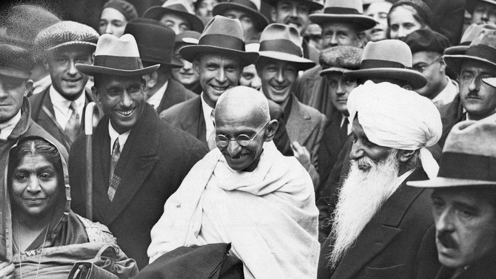

Mahatma Gandhi
Fought for Peace

Mohandas Karamchand Gandhi used to live in South Africa to fight against injustice and class division
Time Line of Mahatma Gandhi
- October 2, 1869: Birth of Mohandas Karamchand Gandhi
- 1883:Gandhi and Kasturbai are married.
- September 4, 1888:Gandhi leaves for England to study law.
- June 10, 1891:·Gandhi passes the bar exam in England.
- 1891-1893:Gandhi fails as a lawyer in India.
- April 1893:Gandhi accepts commission to spend a year in South Africa advising on a lawsuit.
- Spring 1894:Gandhi elects to stay on South Africa, and founds the Natal Indian Congress.
- Spring 1894:Gandhi elects to stay on South Africa, and founds the Natal Indian Congress.
- October 1899:Outbreak of Boer War (1899-1901) in South Africa. Gandhi organizes an ambulance corps for the British
- 1901:Gandhi returns to India to attend the Indian National Congress. G.K. Gokhale introduces him to nationalist leaders
- July 31, 1907:The Boer Republic Transvaal, now under the control of the British, attempts to register all Indians as members; Gandhi and others refuse to register. Their resistance efforts mark the first use of nonviolent non-cooperation by the Indian minority in South Africa, soon calledsatyagraha, or "soul-force."
- April 6, 1919:Nationalists hold a hartal, or day of fasting and prayer, in protest of the Rowlatt Act, which drastically curtails civil liberties in India.
- January 1931:British government yields to protests, releases all prisoners, invites a Congress representative to Britain for a Round Table Conference (the Congress asks Gandhi to be this representative).
- September 20-25, 1932:Gandhi fasts in prison to protest the treatment of untouchables.
- March 22, 1942:Sir Stafford Cripps arrives in India, presenting to the Indian National Congress a proposal for Dominion status (autonomy within the British Commonwealth) after the War.
- January 1931:British government yields to protests, releases all prisoners, invites a Congress representative to Britain for a Round Table Conference (the Congress asks Gandhi to be this representative).
- January 30, 1948:Gandhi is assassinated by Nathuram Vinayuk Godse, a Hindu nationalist.
"If we are to teach real peace in this world, and if we are to carry on a real war against war, we shall have to begin with the children."
-- Mahatma Gandhi